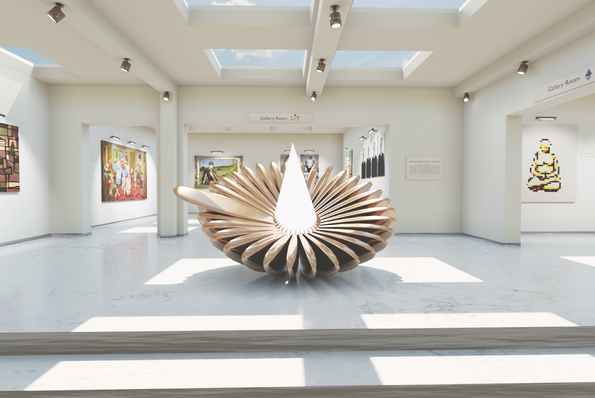

3D Artists
Angela Mantilla
Discord: am.mantilla2156#6732
About
I am a Colombian architect, 3D artist, and photographer. I started to explore 3D visuals while studying architecture and I was fascinated with the potential it has, so when I completed my degree I decided to focus on this area. I came to the UK 6 years ago and I am currently working as a 3D artist in an architectural visualisation studio in London.
I recently started to create my own artwork and it has been an amazing experience. My pieces are a mixture of all my passions and they are what I create in my free time when I escape, learn, and experiment.

treybytes
Discord: treybytes#4704
About
I am treybytes and I make 2D abstract art, 3D art + Animation, and original music that I produce and master myself! I am going to be minting 3D art on the Eth blockchain soon... stay tuned!

Statuette
Discord: Statuette#1329
About
I'm an archaeologist and a ceramic sculptor who discovered the joys of 3D digital art. My sculptural work is represented by Cavin-Morris Gallery in NYC, and I've been creating/minting NFTs since March 2021. I experiment with two different styles of art in my 3D pieces. My figurative pieces are derivatives of my ceramic sculptures, which are based on the theme Goddess Kybele. With these pieces, I present counter-narratives to mythological stories to emphasize women's empowerment. My upcoming 3D abstract sculptures collection aims to inspire and assist the viewers in achieving a mindful state of mind. The practice of mindfulness brings you calm, inner peace, reduces stress and improves your creativity. The "Mindful Abstractions" collection consists of a series of looping videos of 3D animated sculptures designed to help you visualize a simple breathing technique to achieve that.
